Short steps, one picture each. Gold numbers on a picture match the list beside it. Bottom tabs: Feed, Tools, House, Me, with the gold + in the middle.
1Sign in on a new phone
Your name and a 6-digit PIN. That is all.
Find your name
Open the app link from your HouseMaster.
Type your name or your Facebook name.
Tap your name in the list.
Search your name or Facebook name.
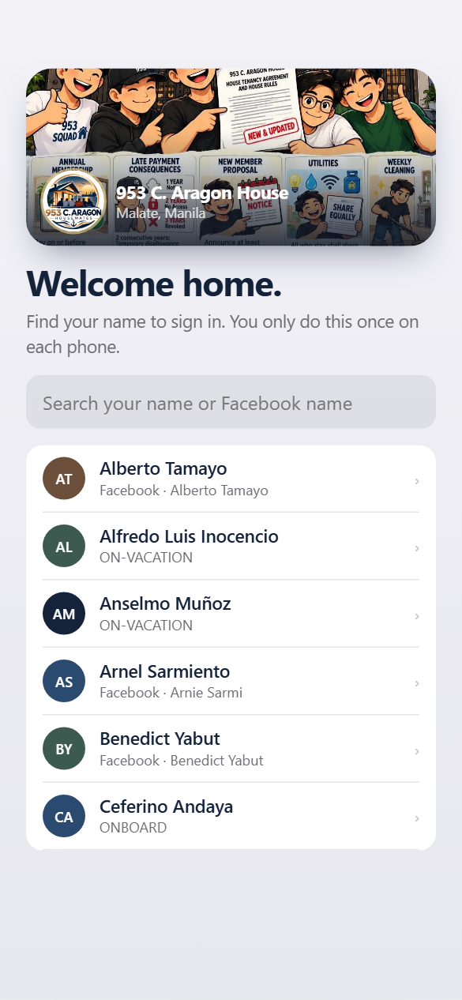
Make your PIN
First time: tap 6 digits, then the same 6 again to confirm.
Next time on a new phone: enter your PIN.
Forgot it? Ask an admin to reset it.
You’ll use this to sign in on a new phone.
Five wrong PINs in a row lock sign-in for 15 minutes. You and the admins get a notice.
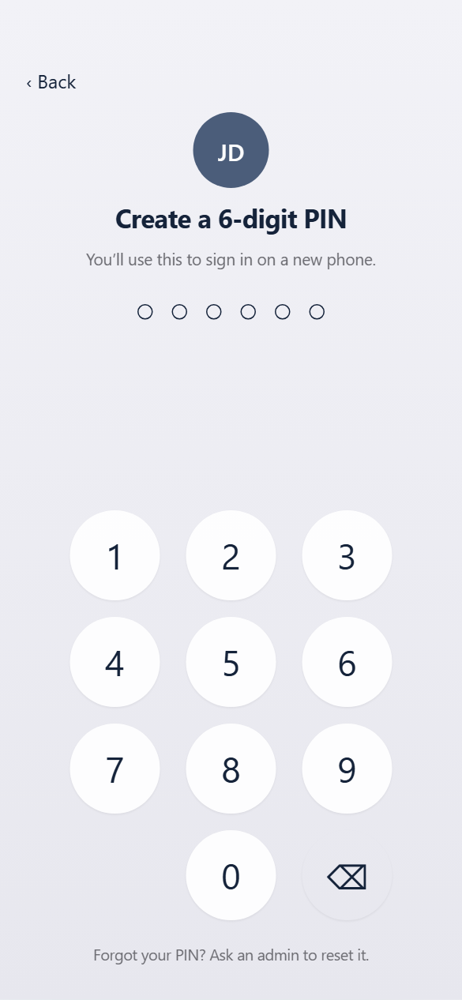
Trust this device?
Your own phone: tap Trust this device and you will not need the PIN here again.
Someone else’s phone: tap Not now.
Trust this device, only on your own phone.
Not now.
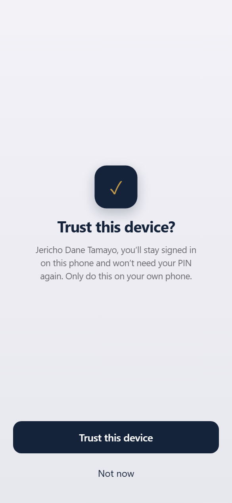
2Feed, Today and the update banner
The Feed is the house noticeboard. When the app has news it tells you.
Your Feed
Feed is the first tab. Posts, receipts, polls and news live here.
Tap Inbox (top right) for chats and notifications.
Tap the gold + to post a message, a receipt or a repair.
The NEW IN THE APP card lists what changed that applies to you. Tap Got it at the top to hide it. It shows once for each new version.
Inbox.
The gold + button.
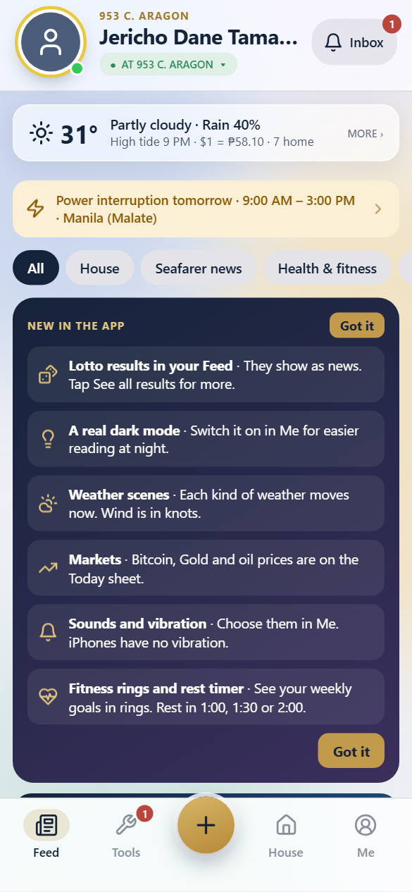
Lotto results in the Feed
Scroll down the All tab (or Fun). Lotto results show up as an ordinary news story, newest draw day first. It lists the winning numbers of that day.
It has no like or comment row, like the other news stories do.
Tap See all results at the bottom of the story to open every draw.
The Lotto results news story.
See all results.
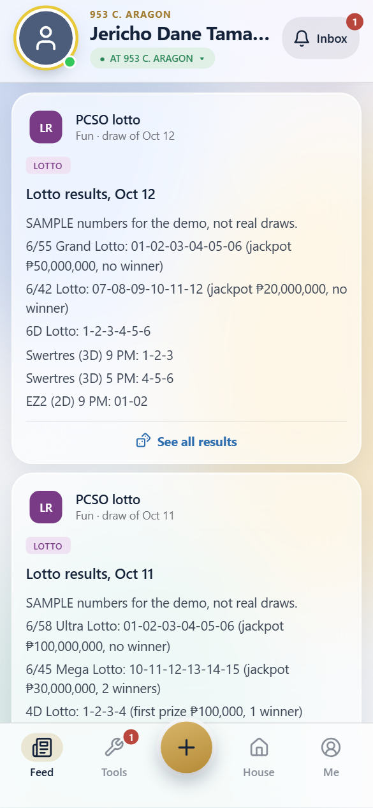
Today: weather, markets, the HouseMaster and who is home
Tap the weather bar at the top of the Feed (MORE).
The big weather card has a moving picture for the weather right now, and the wind is in knots. Tap Full forecast & map for more.
Below it are the Markets card, the HouseMaster on duty (Message and Call) and this month’s birthdays.
The faces show who is AT 953 C. ARAGON. You are always first in your group, in a slightly bigger circle with a gold ring. Retired or inactive members are not listed; if one marks “At 953 C. Aragon”, it shows after a quick review by an admin.
The weather card.
The Markets card. Tap it for the Markets page.
Birthdays this month.
Who is at the house. Tap a face to message them.
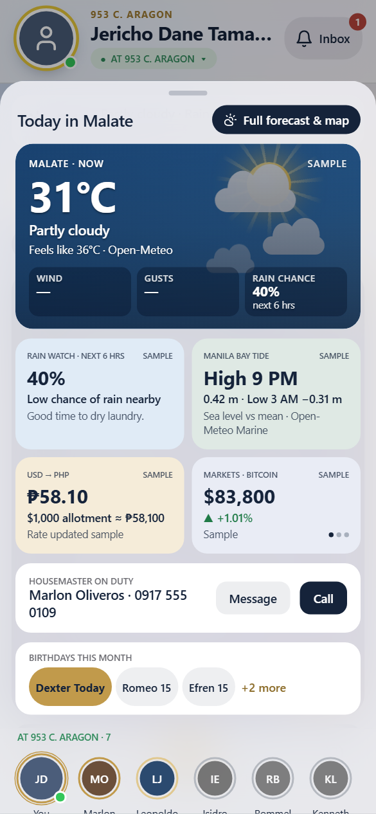
Markets: Bitcoin, Gold and Brent oil
The Markets card on Today shows one price at a time (Bitcoin, Gold, then Brent oil) and changes every few seconds. Tap it to open the Markets page.
The page lists all three, with the change and the time of the price.
Brent oil is a daily price and can be a few days old. An old price is shown in grey.
The pictures here show sample numbers, not real prices. Prices are for information only.
Bitcoin.
Brent oil: a daily price.
The note: for information only.
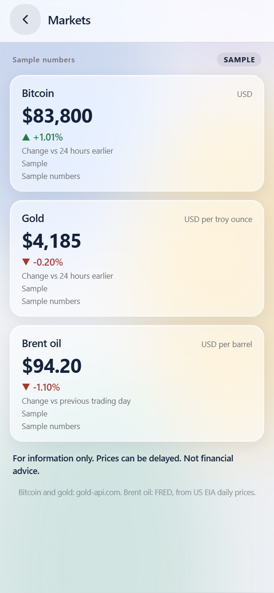
The update banner
A dark bar says: A new version of the app is ready. Tap to update.
Tap it to get the latest version. Or close and reopen the app.
Not now? Tap the x to dismiss it.
The banner. Tap to update.
Dismiss update notice.
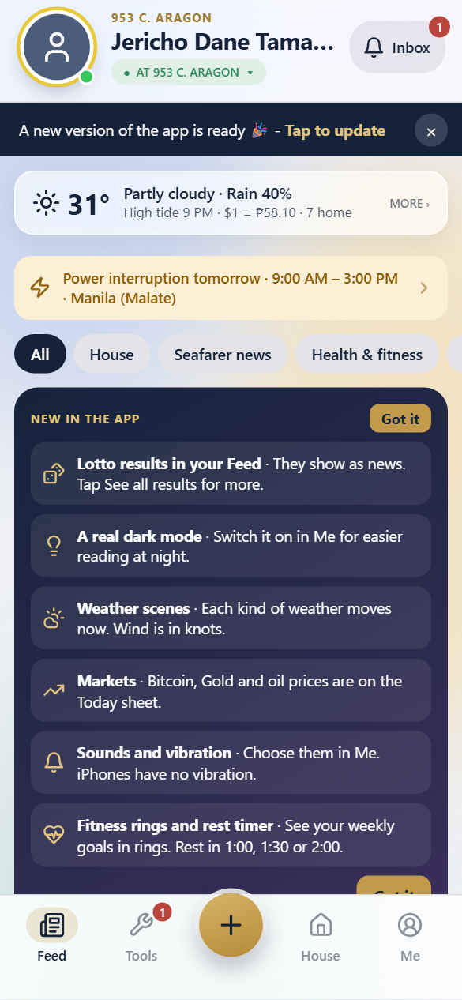
3House: rules, agreement and contract
The House tab has the rules, the tenancy agreement, the house contract and the housemates.
Rules, agreement and contract
Tap House at the bottom.
House rules: search any rule.
Tenancy agreement: updated 01 October 2026. A green You agreed tag means you signed.
House contract: opens the latest contract (a PDF) that the admins uploaded.
House rules.
Tenancy agreement.
House contract.
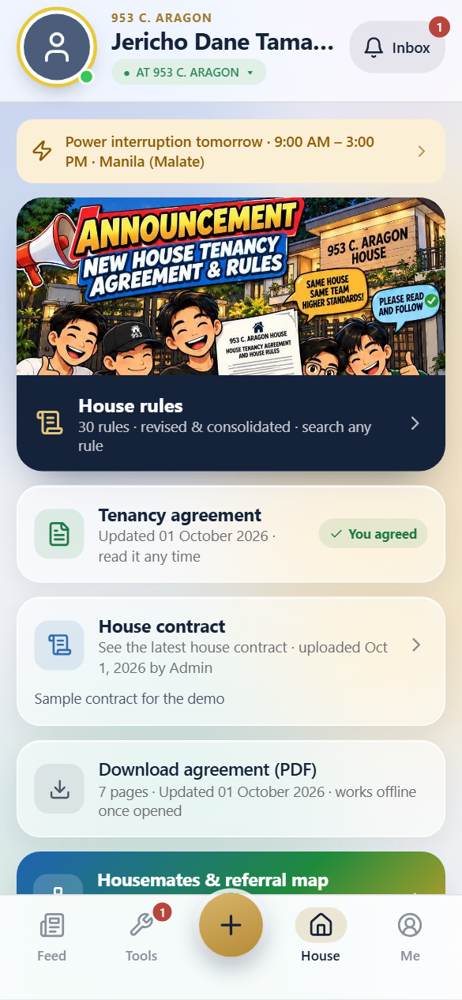
Read and sign
Open Tenancy agreement and read it. It works offline once opened.
Not signed yet? Sign by Oct 31, even from onboard.
After you sign, a copy is saved to your profile.
Your signing status.
Updated 01 October 2026, applies to all members.
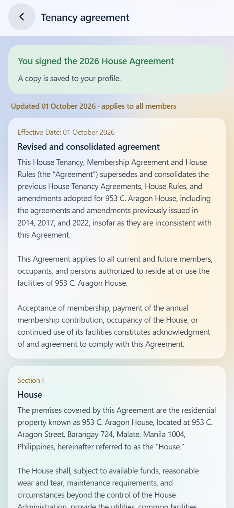
Know your House app
House, then the Know your House app button, just under Housemates & referral map.
It opens this picture guide inside the app. Tap Back to return.
Open in browser opens the same guide in your phone’s browser.
Know your House app.
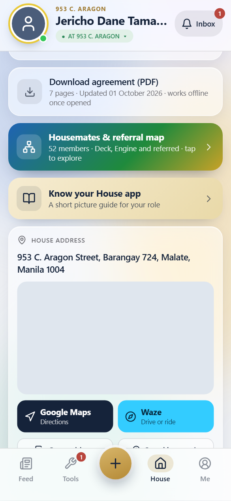
Housemates and the referral map
House, then Housemates & referral map.
Housemates lists everyone by department.
Referral map shows who brought in whom.
Referral map.
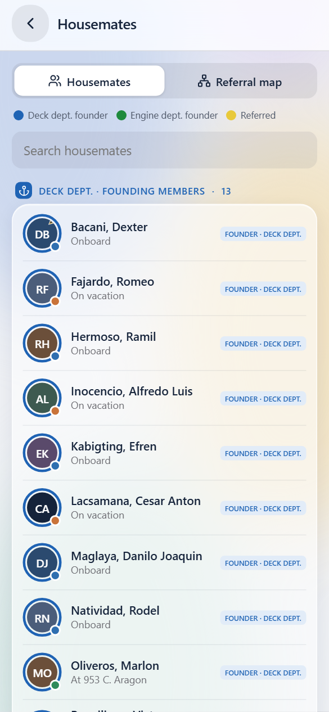
4Your membership status
Active, In arrears or Under review, worked out from the dues the Chief Financial Admin has confirmed (Section VII of the agreement).
Find your chip
Tap Me.
Your status chip sits under your name.
Tap the chip to read the full name, for example Active Member.
Only you and the admins can see your status. Other members cannot.
Your membership status chip.
5Pay your dues and upload a receipt
Pay by online transfer, GCash or cash to the Chief Financial Admin, then post your receipt in the app.
Fill in the receipt
Tap Tools, then the gold Post a receipt tile. (Or the gold + then Payment receipt.)
Paying for: tap your annual membership if it is still due, or this month’s utilities. A paid row is greyed out.
Choose how you paid, type the reference number, tap the photo box to attach your receipt photo.
Tap Post receipt.
What you are paying for.
How you paid.
Post receipt.
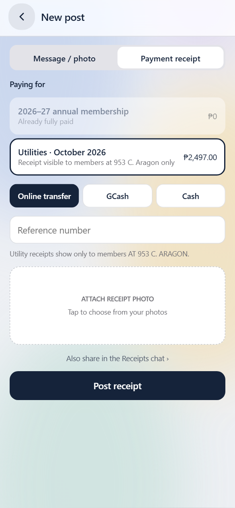
It also shows in the Feed
Your receipt is also posted to the Feed, so the house can see it.
It says Pending confirmation until a finance admin checks it.
A dues receipt is seen by all members. A utilities receipt is seen only by members AT 953 C. Aragon.
Photos in the Feed show whole. Tap one to open it full screen.
Your receipt post, waiting for confirmation.
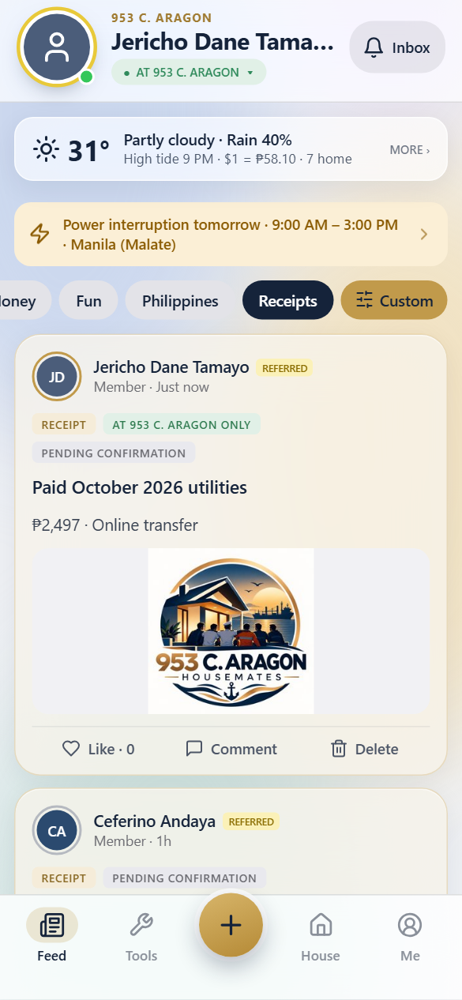
6Inbox, chats and stories
Private chats inside the app, one-to-one or in a small group, and “my day” stories.
Open your inbox
Tap Inbox at the top.
Tap New to start a chat, or tap a chat to open it. You can also tap a housemate’s picture in Today, then Send a message.
Notifications are listed under your chats.
The settings icon (top right) holds the online dot, stories and read receipts.
Inbox settings.
New chat.
A chat. Tap to open.
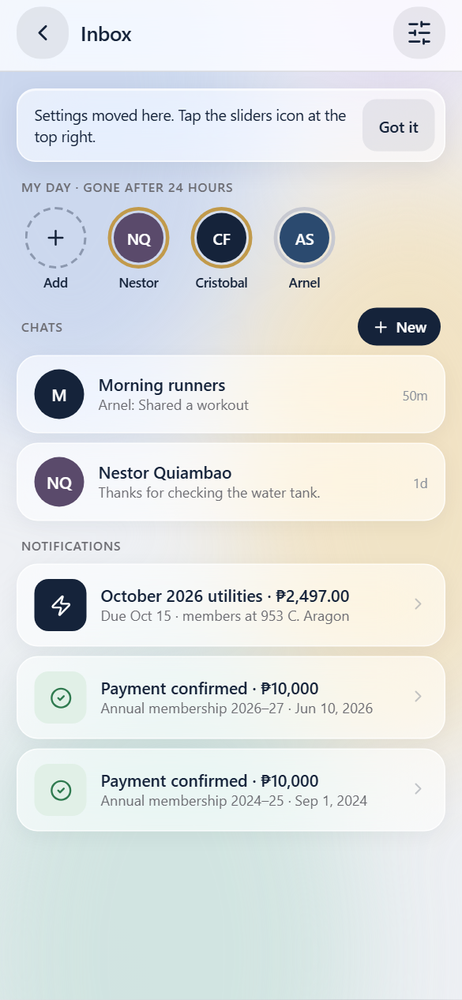
Inbox settings
Show when I’m online: housemates see a green dot while you are in the app.
Show my day (stories): turn stories on or off.
Read receipts: others see when you have read a chat. They are off while you hide your online status.
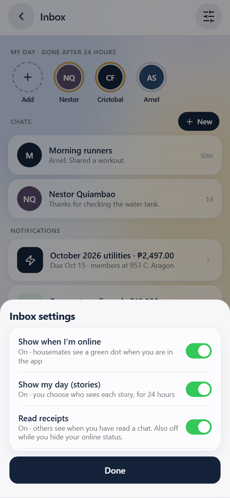
Post a story and choose who sees it
In your Inbox tap the + under MY DAY. A story is gone after 24 hours.
Choose: All housemates, Only these members (tick the names), or Only me.
A photo on a story for chosen members or only you is hidden in the app, but anyone who is sent the exact link to the photo can still open it.
Your own story says who it is shown to.
All housemates.
Only these members.
Only me.
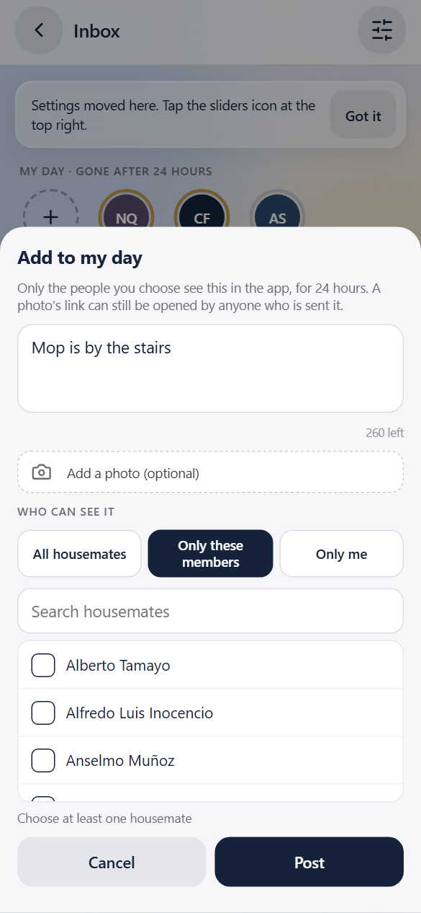
Inside a chat
Coloured bubbles show who said what.
Shared workouts show as cards, with a weekly podium and streak flames.
In a one-to-one chat you can see “Seen” when the other person has read it, and in a group “Seen by” with the names on tap.
At the bottom: Private · stored encrypted. Only the people in the chat can read it.
The chat header: who is in it, Mute and Leave.
A message.
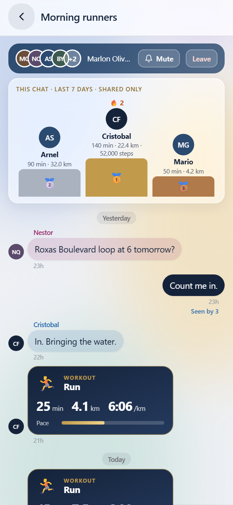
React with an emoji
Press and hold a message (right-click on a computer).
Pick one of six: 👍 ❤️ 😂 😮 😢 🎉.
You get one reaction per message. Pick another to change it, or the same one to remove it.
The six reactions.
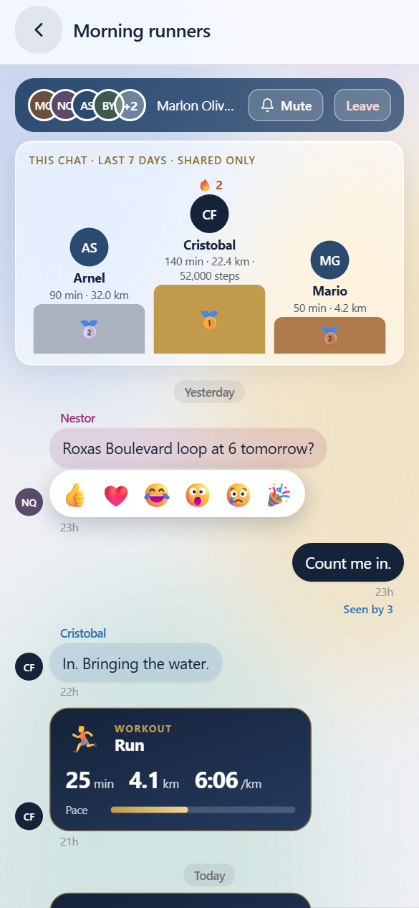
7Fitness
Tools, then Health & fitness. Log a walk, your food, your weight and your blood pressure. Everything stays on your phone.
Open Fitness
Tap Tools at the bottom.
Under MONEY & HEALTH, tap Health & fitness.
The first time, a sheet called How to use Fitness opens by itself. Tap Close.
Along the top you will see Home, Workouts, Food, Readings and Guide.
Health & fitness.
The How to use button
On Home, tap the green How to use button, under the privacy line.
A sheet opens with six short guides, one box each.
Scroll inside the sheet to read them all.
Tap Close when you are done.
Close.
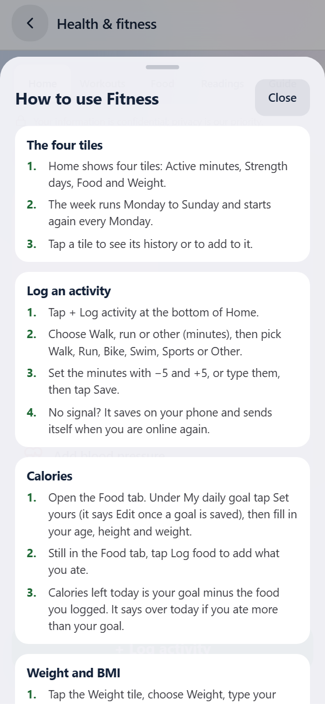
Home: the four tiles
Home shows four tiles and a blood pressure bar. Tap any tile to see its history or add to it.
Active minutes: minutes of walks, runs and other activity. Goal: 150 a week. A ring fills as you go.
Strength days: days you did a gym workout. Goal: 2 a week. It has a ring too. When a ring is full you get a small celebration, once for that week.
Food: calories left today. Weight: your latest weight in kg, and whether it went up or down.
The week runs Monday to Sunday. It starts again every Monday.
How to use.
Active minutes.
Strength days.
Food.
Weight.
Add blood pressure.
+ Log activity.
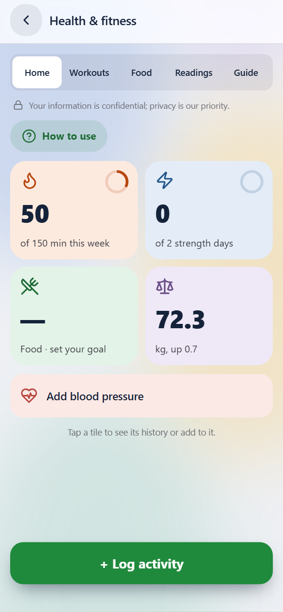
Log an activity: pick what you did
On Home, tap the big green + Log activity button at the bottom.
Pick one: Walk, run or other (minutes), Gym workout (sets), Meal, Weight or Blood pressure.
Changed your mind? Tap Close.
Walk, run or other (minutes).
Gym workout (sets).
Meal.
Weight.
Blood pressure.
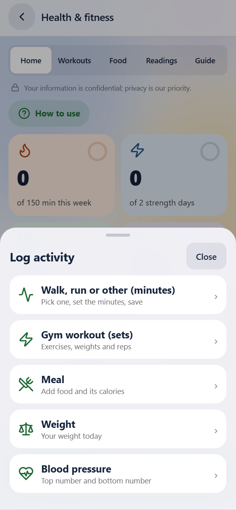
Log a walk or run
Tap Walk, run or other (minutes).
Tap Walk, Run, Bike, Swim, Sports or Other.
Set the minutes: tap −5 or +5, or type a number.
Share to the house feed is off. Turn it on only if you want a card on the feed.
Tap Save. You can log up to 10 a day.
No signal? It says: Saved on this phone. It will sync when you are online.
What you did.
5 minutes less.
5 minutes more.
Save.
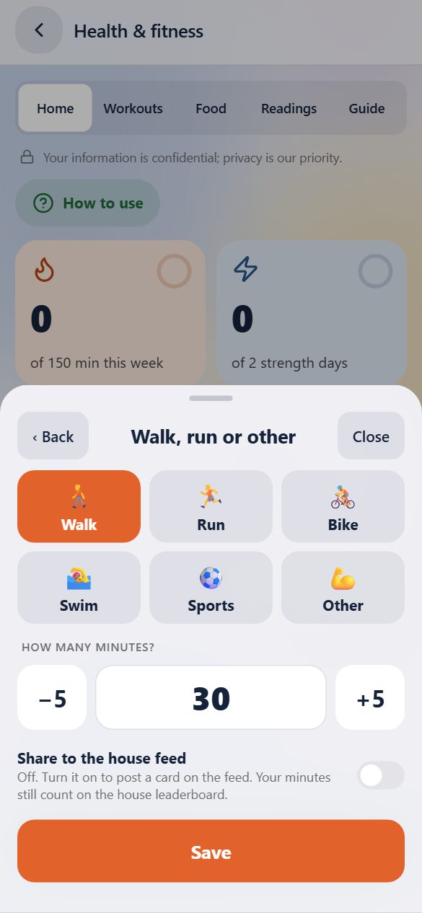
Gym workouts
Tap the Workouts tab.
Tap Start an empty workout, or Repeat last workout, or Start on a routine.
Type kg and reps for each set and tick it. Use the rest timer. Tap Finish when you are done.
Your history is listed under HISTORY.
Start an empty workout.
Repeat last workout.
Start a saved routine.
Workouts and food stay on your phone. In Workouts, tap Export data now and then to save a backup.
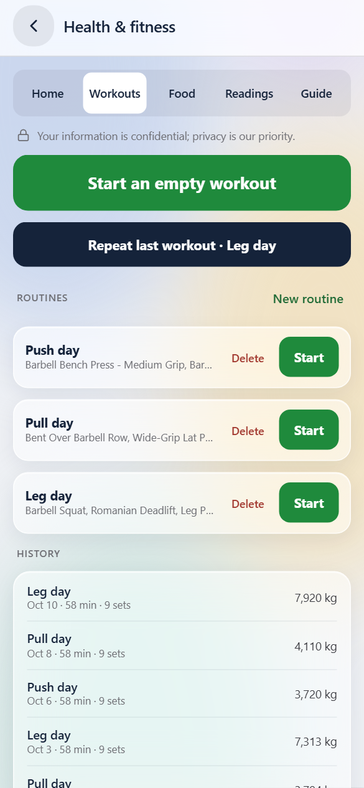
The rest timer
In a workout, tick a set with the Done button. The gold rest bar opens at the bottom.
A ring counts down the rest. Tap 1:00, 1:30 or 2:00 to pick how long.
The last 3 seconds tick and a chime plays at the end (if Timer sounds is on in Me). The screen stays awake while you rest.
Tap Skip to stop resting. −15 and +15 change the time.
Rest 1 minute.
Rest 1 minute 30 seconds.
Rest 2 minutes.
Timer sound on or off.
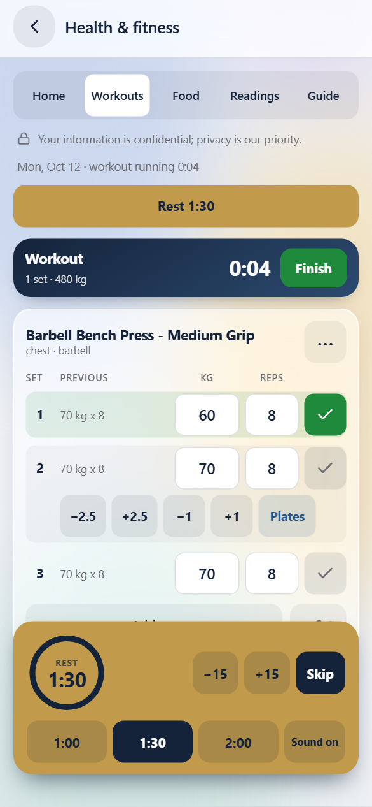
Calories: your daily target
Tap the Food tab.
The green card shows how many calories are left today.
Calories left today is your goal minus the food you logged. It says over today if you ate more than your goal.
Scroll down to My daily goal. Tap Set yours.
Calories left today.
Log food.
Set yours.
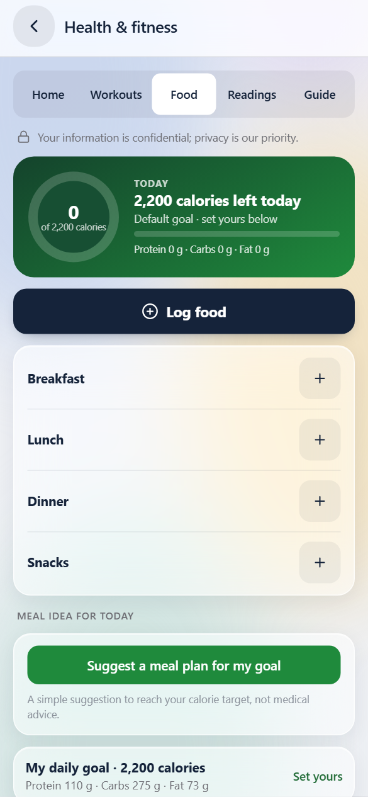
Work out your own target
Type your Age, Height (cm) and Weight (kg).
Tap Male or Female.
Pick how active you are, then Lose weight, Keep or Gain.
Your calorie goal changes by itself. There is no Save button. Tap Close to fold the form.
Age.
Height in cm.
Weight in kg.
Male or Female.
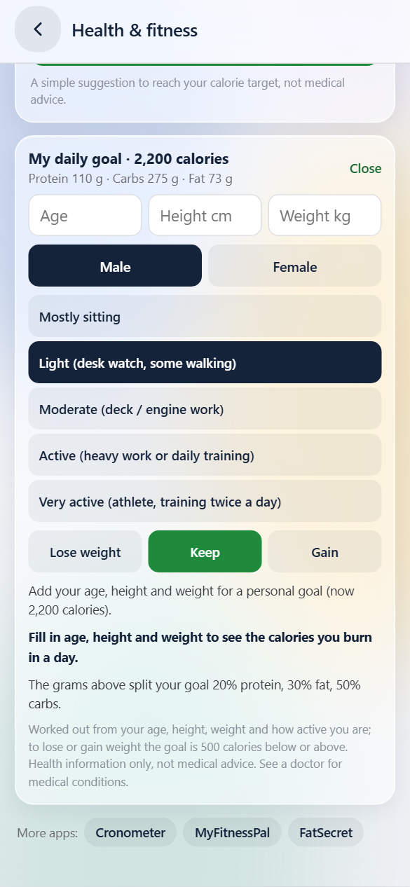
Calories: add what you ate
Tap Log food, or the + beside Breakfast, Lunch, Dinner or Snacks.
Tap the meal at the top of the sheet.
Find the food with Search, Recent, Filipino or Scan.
Not listed? Under ADD BY HAND, type the food and its calories, then tap Add.
Tap Done. Calories left today updates.
The meal.
Search.
Add by hand.
Done.
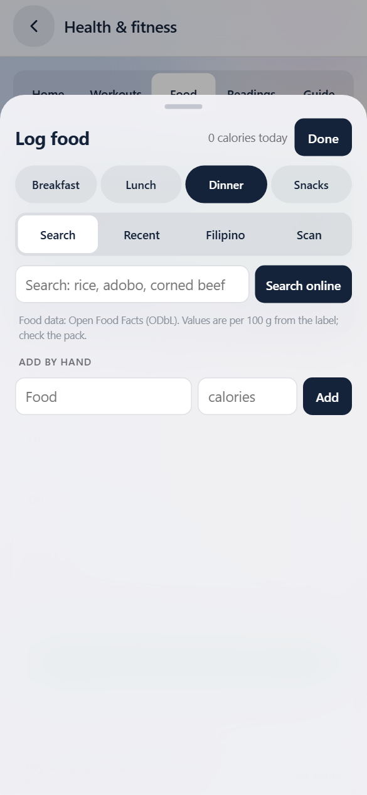
Weight and BMI
On Home, tap the Weight tile. Readings opens with Weight chosen.
Type your weight in kg, then tap Save.
Past weights are in the list below. The chart is under TRENDS.
For your BMI and healthy range, add your height. Tap Add your height to see your healthy range.
Weight.
Your weight in kg.
Save.
Add your height.
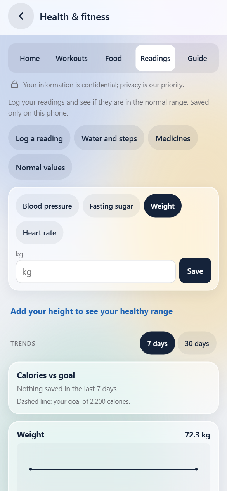
Blood pressure and blood sugar
On Home, tap Add blood pressure. Or open the Readings tab.
Tap Blood pressure or Fasting sugar.
Blood pressure: type the Top number and the Bottom number. Sugar: type the number in mg/dL.
Tap Save. The chart under TRENDS shades the normal range.
Blood pressure.
Fasting sugar.
Top number.
Bottom number.
Save.
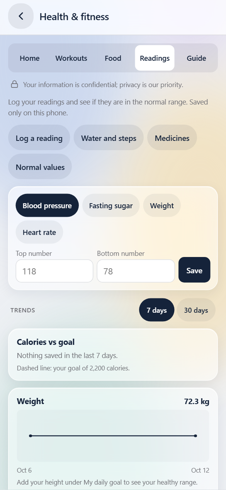
What is normal
In Readings, tap Normal values.
Blood pressure: normal is below 120 over below 80. High is 140 or more, or 90 or more. Above 180 over 120: get help now.
Fasting sugar: normal is 70 to 99 mg/dL. 100 to 125 is prediabetes. 126 or more on two tests is the diabetes range.
Health information only, not medical advice. See a doctor for medical conditions, and if a reading worries you.
Blood pressure values.
Blood sugar, fasting.
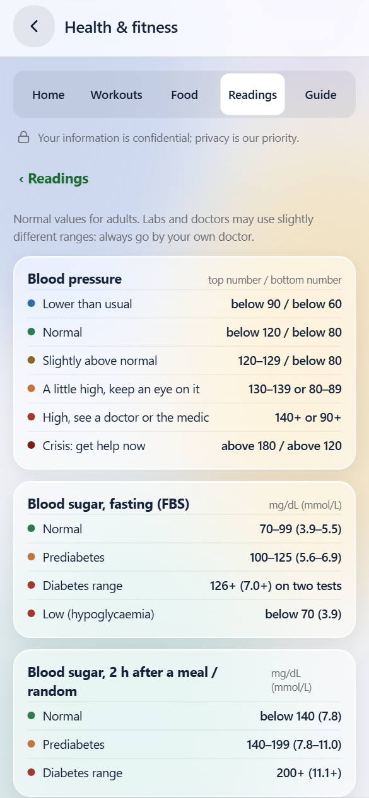
Your health logs are private
Your health logs stay on your phone unless you choose to share them.
Only a workout you share with Share to the house feed goes to the house.
Every Fitness screen says: Your information is confidential; privacy is our priority.
8Tools: Games, Lotto and Calendar
Tap Tools at the bottom.
Games and Lotto results
Games: Sudoku, 2048, memory and minesweeper. They work offline.
Lotto results: every PCSO draw.
Games.
Lotto results.
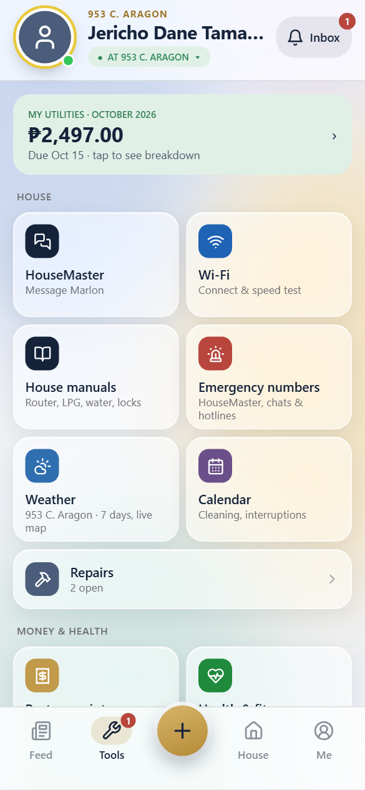
Lotto results
The newest draw of each game is at the top.
Results update by themselves after the 9 PM draws. If a result looks wrong, check the official PCSO site.
Scroll for All results: pick a game or jump to a month to see past draws.
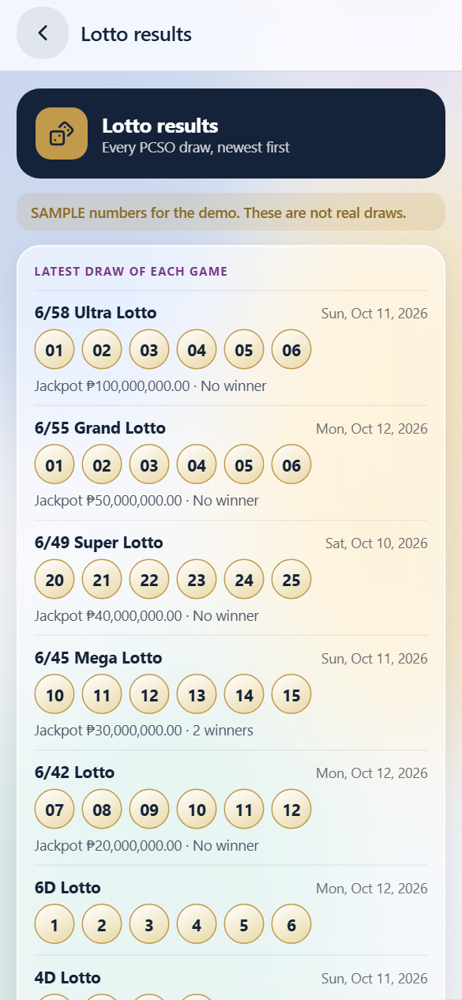
My numbers
My numbers is your private notebook of lucky numbers.
Tap Add numbers to save a set, or numbers for a coming draw.
It is saved on this phone only. For fun and record-keeping. Play responsibly.
Add numbers.
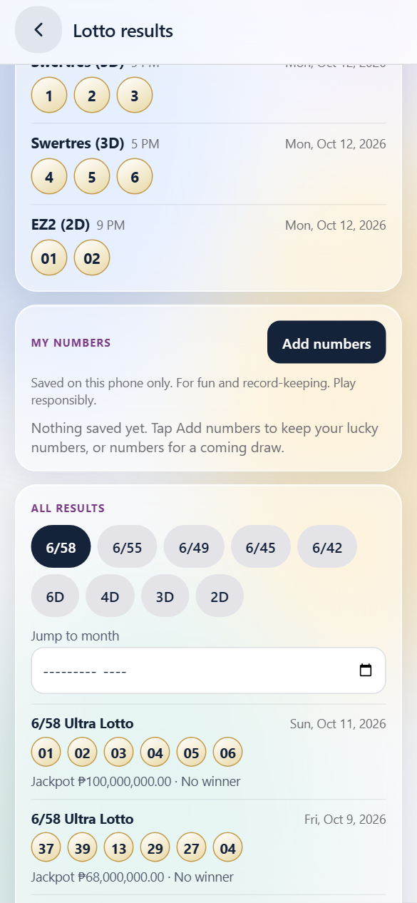
Calendar
Tools, then Calendar. Power and water notices show on their days.
A notice that is over disappears by itself.
Birthdays this month are listed under the calendar.
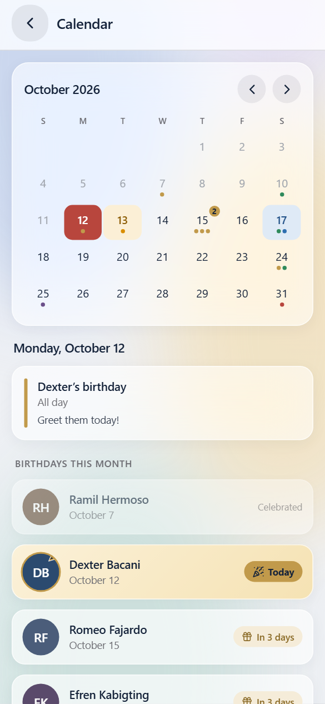
9Me: dark mode, privacy and your details
Your profile, notifications, dark mode, sounds and the privacy note.
Dark mode
Tap Me.
Find the Dark mode switch near the top. It says Off or On.
Tap it for a deep navy look that is easier on the eyes at night. Photos and brand colours stay true.
Tap it again to go back. It is remembered on this phone only.
Dark mode is new. If something is hard to read, tell us with Report a bug.
The Dark mode switch.
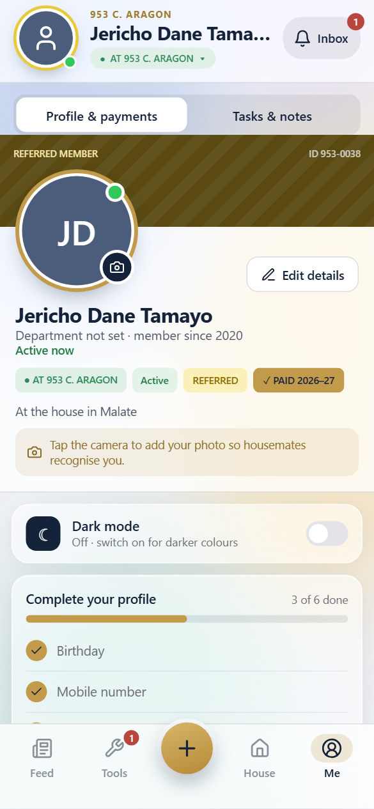
Sounds and vibration
Tap Me and scroll to the Sounds and vibration card.
Vibration: a light buzz on taps and saves.
Sounds: soft clicks and chimes.
Timer sounds: ticks and a chime when a timer ends.
iPhones do not vibrate in web apps, so Vibration does nothing there.
The Sounds and vibration card.
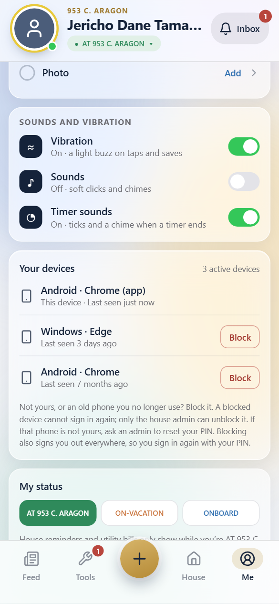
The privacy note
Tap Me and scroll to Your privacy matters to us.
It says your health logs stay on your phone unless you share them, chats are encrypted, and your contact details are visible only to you and the house admins.
Tap More details for the full list, one topic at a time.
The privacy note.
More details.
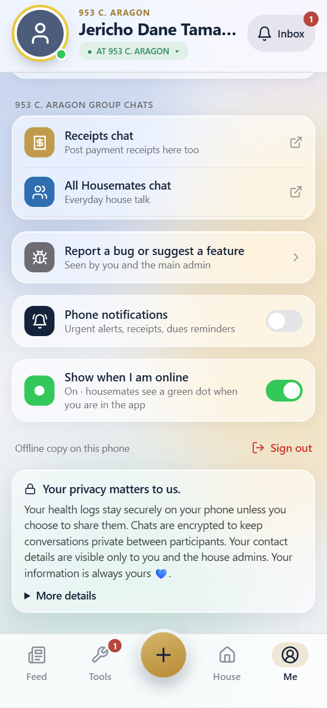
10Your devices
See where you are signed in, and block a phone you no longer use.
Check and block a device
Tap Me and find the Your devices card. It lists each phone or browser you have signed in on, with when it was last used. This phone says This device.
Not yours, or an old phone? Tap Block, then tap Sure?.
A blocked device cannot sign in again. Only a house admin can unblock it.
Blocking signs you out everywhere, so sign in again with your PIN.
11Report a bug or idea
Something broken, or an idea? Tell us.
Send a report
Tap Me, then Report a bug or suggest a feature. (Also in Tools.)
Choose Bug, Idea or Other, and write what went wrong.
Optional: attach a screenshot.
Tap Send report. It is seen by you and the main admin (screenshots also by the house admins).
Bug, Idea or Other.
Your screenshot, if you attach one.
Send.
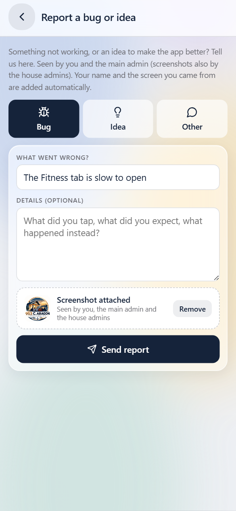
Who can see it
In the privacy note, tap More details, then Bug report screenshots. It says:
A screenshot you attach is stored in private storage under your own folder. Only you and the house admins can open it. The bug report text is seen by you and the main admin.